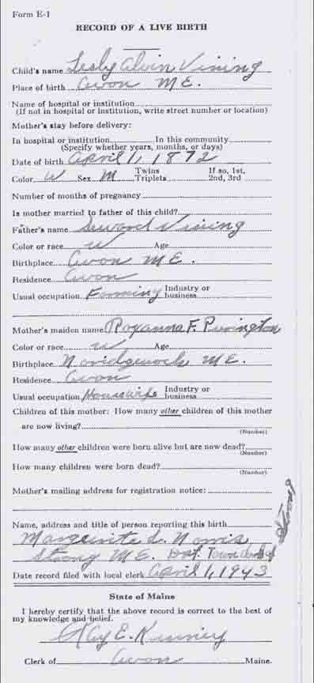
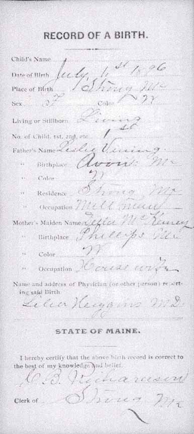
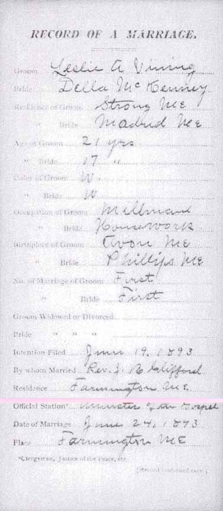
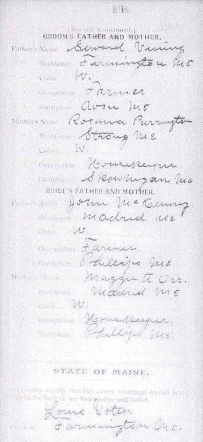

Birth Data
Birth record for Leslie Alvin Vining (from Maine State Archives):

Marriage Data
Marriage record for Leslie Alvin Vining and Della McKenney (from Maine State Archives):

Census Data
| 1900 | 1910 | 1920 | 1930 | 1940 | |
| Leslie Alvin Vining | 28 | 38 | 47 | 58 | ? |
| (1) Della J. (McKenney) Vining | 24 | ||||
| (2) Ella A. (Winter) Vining | 29 | 39 | 49 | ? | |
| Clyde V. Vining | 3 | 13 | 23 [see note below] |
33 [see note below] |
|
| Christie Vining | 0 | 9 | 20 | ? |